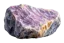

Mineral Grimoire
Lithium Quartz
Lithium Quartz is a variety of quartz in the Hexagonal/Trigonal crystal system with a Mohs hardness of 7, containing natural lithium inclusions that produce its distinctive pale pink to purple coloration.
Appearance
Lithium Quartz ranges from pale pink to purple depending on the concentration of lithium within each specimen. The intensity of color varies from stone to stone. Beyond lithium, these crystals commonly contain inclusions of manganese, aluminum, iron, and kaolinite, contributing to their unique mineral composition. They display the classic quartz form with a vitreous luster and transparent to translucent clarity.
Colors
Pale pink, purple, lavender
Origin
The only currently known source of Lithium Quartz is one remote area of Minas Gerais, Brazil, making it an exceptionally rare find.
Magickal Properties
Lithium Quartz is a powerful mood stabilizer that brings balance, optimism, and emotional equilibrium to its keeper. The natural lithium inclusions work to soothe low vibrational energies and shift perspective toward a brighter outlook.
For beginners, this stone promotes restful and restorative sleep, provides relief from heavy moods, and eases the mind into deeper meditation through calm and tranquility. It encourages heartfelt spiritual connections with others and supports letting go of the need to control outcomes.
Advanced practitioners value Lithium Quartz for its ability to reduce the intensity and frequency of anxiety episodes, particularly those connected to PTSD, by gently releasing underlying trauma. It addresses stress related hormone imbalances and calms the nervous system. When placed beneath a healing table, it sends calming energy throughout an entire session, enhancing the flow of healing energy while fostering harmony and empathy between practitioner and client. Notably, Lithium Quartz is the only quartz variety that can remain in the bedroom without disrupting sleep and dream cycles.
Chakra Work
Lithium Quartz activates the Crown Chakra to access inner wisdom, connection to spirit realms, and attunement to the universe. Placed at the crown, it channels vibrations of tranquility and surrender, bringing mind and body into a state of balance and ease. It also serves as a heart healing stone when held against the Heart Chakra, alleviating stress and soothing the nerves to allow a more balanced heart space.
Correspondences
Balance, Wisdom, Serenity, Sleep, Peace, Relaxation, Empathy, Optimism, Tranquility, Anxiety, Trauma, Harmony, Healing, Dreams, Meditation, Stress Relief, Stress, Letting Go, Connection, Hormones, Nervous System
Partners Well With
Quartz with Ajoite, Celestite,  Danburite, Kunzite,
Danburite, Kunzite,  Petalite,
Petalite,  Ruby,
Ruby,  Scolecite,
Scolecite,  Sugilite
Sugilite
Care
As a quartz variety, Lithium Quartz is safe for water cleansing and sun exposure. Cleanse under cool running water or place on a selenite plate. Charge under moonlight or beside Clear Quartz clusters. Its unique bedroom compatibility makes it an ideal bedside companion for promoting restful sleep.
Magickal Message
"Embrace peace, stillness, and calm as you work with my soothing energies. Carry me with you to feel balanced and relaxed in all situations."